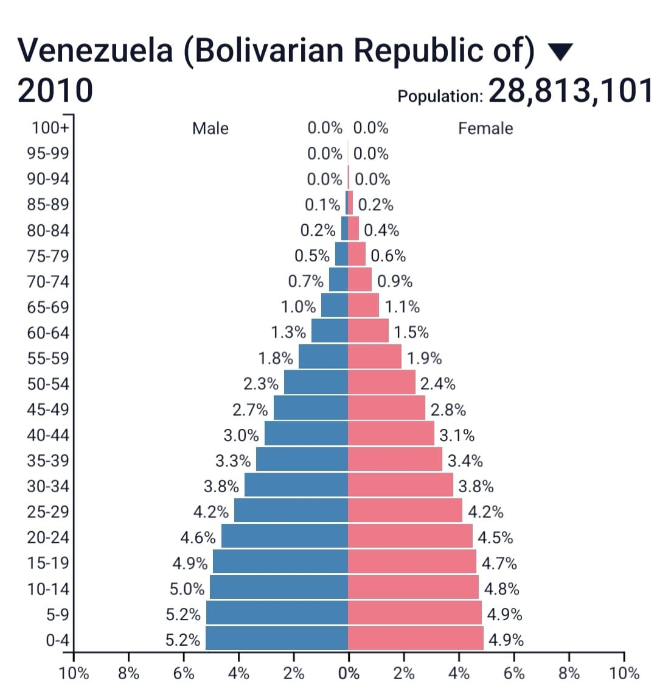
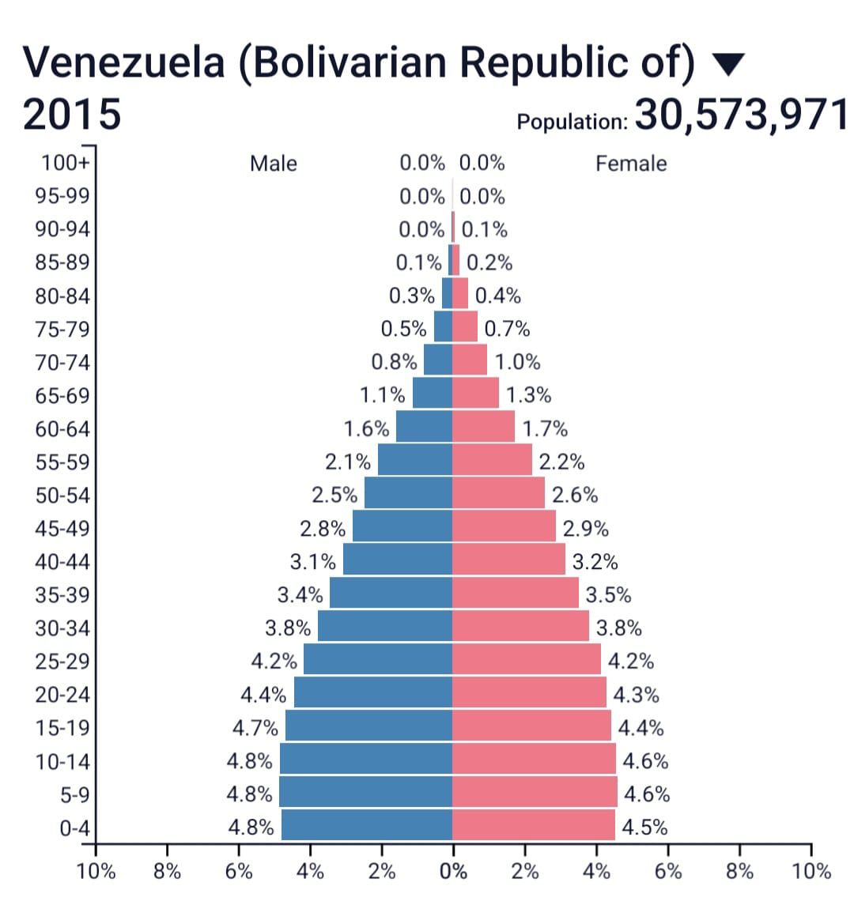

Envelhecimento Populacional na Venezuela
O envelhecimento populacional na Venezuela constitui um fenômeno demográfico complexo que resulta da combinação de múltiplos fatores estruturais, econômicos e sociais. Entre os principais fatores está a migração massiva de jovens, que tem alterado profundamente a estrutura etária do país, aumentando significativamente a proporção de idosos na população :contentReference[oaicite:0]{index=0}.
Historicamente, a Venezuela apresentava uma população predominantemente jovem. No entanto, a crise econômica iniciada em 2014 provocou um êxodo populacional sem precedentes, reduzindo drasticamente a força de trabalho ativa e acelerando o processo de envelhecimento demográfico :contentReference[oaicite:1]{index=1}.
📊 Evolução Demográfica
2010

Em 2010, a estrutura populacional era caracterizada por uma base larga, indicando altas taxas de natalidade e grande número de jovens.
2015

Em 2015, observa-se o início de mudanças estruturais, com redução progressiva da população jovem devido à migração.
2023

Em 2023, evidencia-se um envelhecimento acentuado, com aumento significativo da população idosa e redução da base da pirâmide.
⚠️ Impactos Econômicos
A redução da população economicamente ativa compromete o crescimento econômico, reduz a produtividade e aumenta a pressão sobre sistemas de saúde e previdência. Esse cenário pode levar à estagnação econômica e aumento do déficit fiscal.
⚠️ Impactos Sociais
- Maior dependência entre gerações
- Aumento da demanda por cuidados médicos
- Desigualdade social crescente
- Fragilidade das políticas públicas